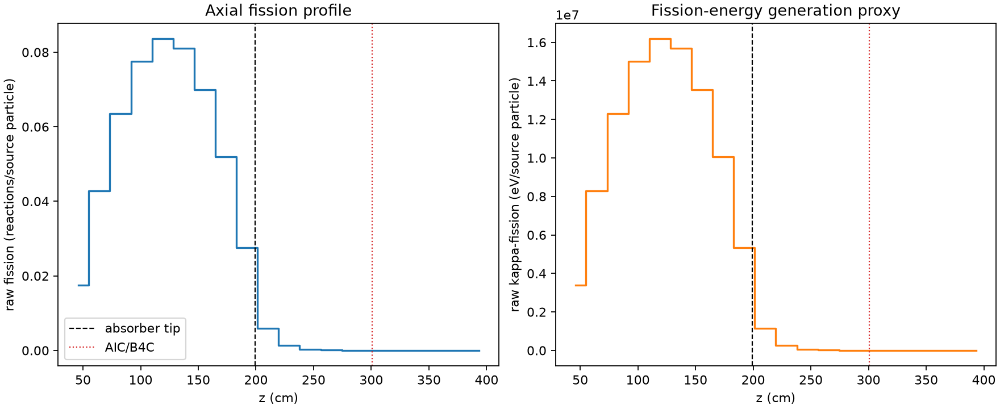
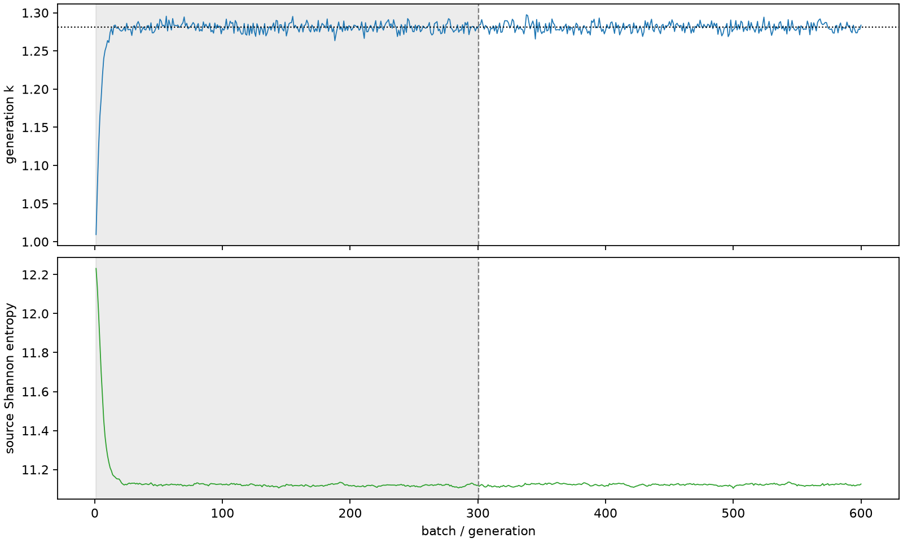

| field | value |
|---|---|
| experiment | V2-STAGE_256_OGRENCI_02-0003 |
| k | 1.2811295342291258 |
| MC standard error | 0.00019004670869776546 |
| seconds | 957.0882913829992 |
| acceptance | not_assessed |
| convergence | review_required |
Completed is output integrity only; physical and statistical review required. Zero tallies do not prove zero production or zero uncertainty.
| diagnostic | value |
|---|---|
| geometric fuel voxels | 5280 |
| zero fission tally voxels | 672 |
| low signal fuel voxels | 1879 |
| low signal fission share | 7.040238244534915e-05 |
| low signal kappa share | 7.042811379632396e-05 |
| important fission share | 0.9501209186192561 |
| previous filter included | 3401 |
| duration estimate s | 1562.5173488400023 |
| actual minus estimate s | -605.4290574570032 |
| fission relative MC error | statistics |
|---|---|
| all_geometric_fuel | {"voxels": 5280, "positive_mean_voxels": 4608, "zero_mean_voxels": 672, "undefined_relative_error_voxels": 672, "median": 0.01342512588728511, "p95": 0.9840193155727689, "maximum": 1.0000000000000002} |
| low_signal | {"voxels": 1879, "positive_mean_voxels": 1207, "zero_mean_voxels": 672, "undefined_relative_error_voxels": 672, "median": 0.6485163756387878, "p95": 1.0, "maximum": 1.0000000000000002} |
| important_95pct | {"voxels": 2103, "positive_mean_voxels": 2103, "zero_mean_voxels": 0, "undefined_relative_error_voxels": 0, "median": 0.006730109813901557, "p95": 0.010477686149906074, "maximum": 0.013509471451368459} |
| outside_previous_filter | {"voxels": 1879, "positive_mean_voxels": 1207, "zero_mean_voxels": 672, "undefined_relative_error_voxels": 672, "median": 0.6485163756387878, "p95": 1.0, "maximum": 1.0000000000000002} |
| kappa_fission relative MC error | statistics |
|---|---|
| all_geometric_fuel | {"voxels": 5280, "positive_mean_voxels": 4608, "zero_mean_voxels": 672, "undefined_relative_error_voxels": 672, "median": 0.013409435437737434, "p95": 0.9839679855374337, "maximum": 1.0000000000000002} |
| low_signal | {"voxels": 1879, "positive_mean_voxels": 1207, "zero_mean_voxels": 672, "undefined_relative_error_voxels": 672, "median": 0.647894933307158, "p95": 1.0, "maximum": 1.0000000000000002} |
| important_95pct | {"voxels": 2103, "positive_mean_voxels": 2103, "zero_mean_voxels": 0, "undefined_relative_error_voxels": 0, "median": 0.006722796594029799, "p95": 0.010466373193463361, "maximum": 0.013494695979016013} |
| outside_previous_filter | {"voxels": 1879, "positive_mean_voxels": 1207, "zero_mean_voxels": 672, "undefined_relative_error_voxels": 672, "median": 0.647894933307158, "p95": 1.0, "maximum": 1.0000000000000002} |
| axial bin | fission share | kappa-fission share |
|---|---|---|
| 1 | 0.033339313710719416 | 0.03334065403205684 |
| 2 | 0.08182339079370456 | 0.08182302716988106 |
| 3 | 0.12144937508346611 | 0.12144850304448114 |
| 4 | 0.14830014288453083 | 0.14829888019372017 |
| 5 | 0.15972376664213445 | 0.15972234443941516 |
| 6 | 0.15491657194340452 | 0.15491535043292426 |
| 7 | 0.13376164999690818 | 0.13376061391313818 |
| 8 | 0.09926641732108885 | 0.09926557062096421 |
| 9 | 0.05257654020305172 | 0.05257734309009827 |
| 10 | 0.011286237183351476 | 0.01128989008323488 |
| 11 | 0.002708712813145541 | 0.00270963276807532 |
| 12 | 0.0006392537842092666 | 0.0006394824741051431 |
| 13 | 0.00015731801768076423 | 0.0001573769589048652 |
| 14 | 3.635080748773949e-05 | 3.636562510885489e-05 |
| 15 | 1.0156535471113107e-05 | 1.0158547511271485e-05 |
| 16 | 3.4931317852043823e-06 | 3.4952135187194225e-06 |
| 17 | 9.319132854257811e-07 | 9.333595394576948e-07 |
| 18 | 2.935200566049767e-07 | 2.942492939038473e-07 |
| 19 | 8.371451817269188e-08 | 8.378402826693808e-08 |
| 20 | 0.0 | 0.0 |
Histories include the inactive-to-active transition at batch 300. kappa-fission approximates fission energy production, not total heat deposition.

